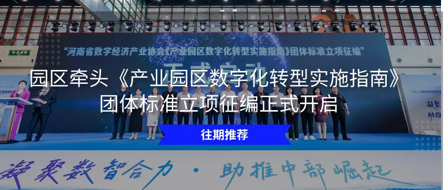

2026年2月5日，荥阳市数字经济产业园与国家级高新技术企业郑州捷音通讯科技有限公司通过线上会议形式展开深度交流，双方围绕数字技术赋能中小企业发展、AI+产业生态共建等议题达成合作共识。荥阳市数字经济产业园招商经理韩姗、郑州捷音项目经理刘博参与会议。
作为腾讯、用友、中信等头部机构战略投资的科技企业，郑州捷音通讯科技有限公司打造了行业领先的智能客户关系管理系统——EC CRM。其自主研发的SixBot平台通过构建营销、销售、客服等场景的AI智能体，实现人机协作的自动化流程。
目前，EC已服务教育、金融、零售等六大行业超3万家企业，每日支撑百万级销售活跃用户，年均创造千万级商机与数百万笔交易，成为企业数字化转型的“增长引擎”。公司还荣获“工信部中国中小企业首选服务商”、“36氪中国新商业引领者“、“中国SaaS优秀CRM产品奖”、“IDG度最佳CRM产品”、“腾讯云SaaS臻选产品”、“最具投资价值企业25强”、“德勤-深圳高科技高成长20强”等超过30项大奖。
交流中，刘博详细介绍了捷音科技的技术优势与产业布局，并表达了对荥阳数字经济生态的期待，荥阳市作为中原经济区核心城市，在产业配套和人才资源方面具有独特优势。EC的AI能力可深度赋能本地制造、零售等传统产业，助力中小企业低成本、高效率实现数字化升级。
韩姗表示，荥阳市数字经济产业园正聚焦人工智能、大数据等前沿领域，构建“技术孵化-场景落地-产业集聚”的创新生态。捷音科技的技术实力与行业经验与园区发展方向高度契合，未来双方可在联合研发、企业服务等领域展开合作。
编辑：刘琪
责编：周政


